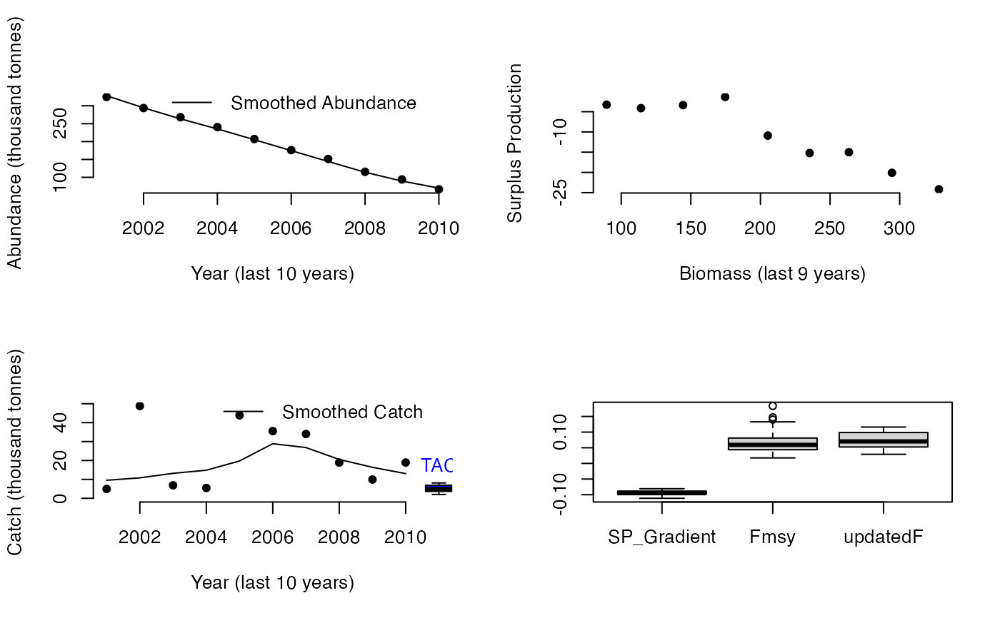

DynF.RdThe Fratio MP with a controller that changes the level of F according to the estimated relationship between surplus production and biomass. Ie lower F when dSP/dB is positive and higher F when dSP/dB is negative.
DynF(x, Data, reps = 100, plot = FALSE, yrsmth = 10, gg = 2)A position in the data object
A data object
The number of stochastic samples of the MP recommendation(s)
Logical. Show the plot?
The number of historical recent years used for smoothing catch and biomass data
A gain parameter that modifies F according to the gradient in surplus production with biomass
An object of class Rec-class with the TAC slot populated with a numeric vector of length reps
The method smoothes historical catches and biomass and then infers the relationship between surplus production and biomass (as suggested by Mark Maunder and Carl Walters). The approach then regulates a F based policy according to this gradient in which F may range between two different fractions of natural mortality rate.
The core advantage is the TAC(t) is not strongly determined by TAC(t-1) and therefore errors are not as readily propagated. The result is method that tends to perform alarmingly well and therefore requires debunking ASAP.
The catch limit (TAC) is calculated as: $$\textrm{TAC}=F B$$ where \(F\) is fishing mortality and \(B\) is the estimated current biomass.
\(F\) is calculated as:
$$F = F_{\textrm{MSY}} \exp{-gG}$$
where \(F_{\textrm{MSY}}\) is calculated from assumed values of \(\frac{F_{\textrm{MSY}}}{M}\) and
\(M\), g is a gain parameter and G is the estimated gradient in surplus
production (SP) as a function of biomass (B). Surplus production for year y is calculated as:
$$SP_y = B_{y+1} - B_y + C_y$$
Trends in historical catch (C) and biomass (B) are both estimated using a loess smoother, over the last yrsmth years,
of available catch and a time-series of abundance, calculated from an index of abundance (Data@Ind)
and an estimate of abundance (Data@Abun) for the current year.
See Data-class for information on the Data object
DynF: Abun, Cat, FMSY_M, Ind, Mort, Year
See Online Documentation for correctly rendered equations
Made-up for this package.
DynF(1, Data=MSEtool::Atlantic_mackerel, plot=TRUE)

#> TAC (median)
#> 4.854513